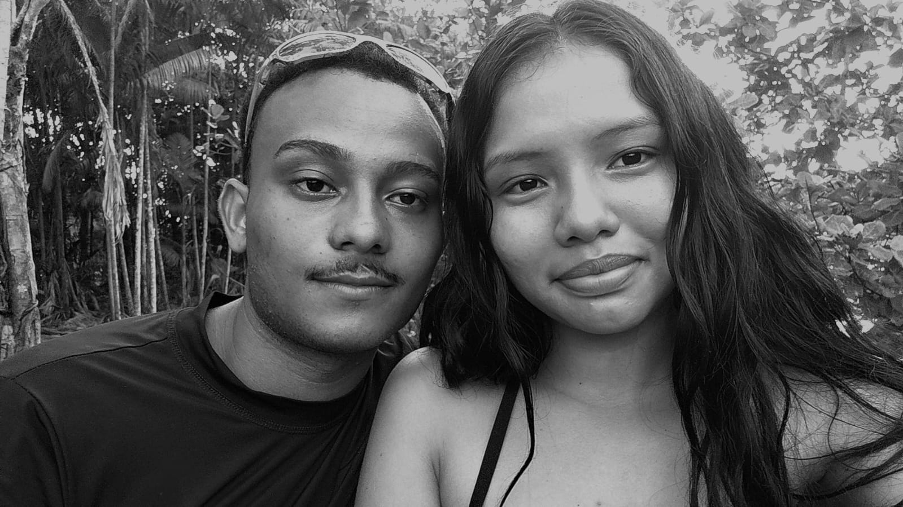
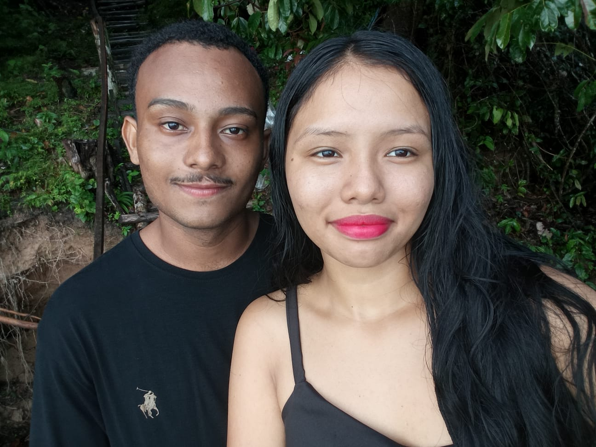

Desde que você entrou na minha vida, tudo mudou❤️

Primeiro Encontro - 07/02/2026
Alice,
se você entrou aqui,
é porque eu quis criar um lugar só seu.
Um lugar calmo.
Sem pressa.
Onde você possa lembrar quem você é
quando o mundo fizer você esquecer.
Bem-vinda ao seu cantinho,
minha garotinha de ouro.
Você é daquelas pessoas que não fazem barulho,
mas mudam tudo ao redor.
Você sente fundo,
pensa muito,
e mesmo assim continua sendo gentil.
Alice, você é sensível sem ser fraca,
forte sem ser dura
e rara sem precisar provar nada.
Tem mundos que só existem
porque pessoas como você existem.
Eu te chamo de garotinha de ouro
porque ouro não é só brilho.
Ouro é valor.
É cuidado.
É algo que não se encontra fácil
e que, quando se encontra, a gente protege.
Você é ouro nos detalhes:
no jeito de se importar,
no silêncio que acolhe,
na presença que conforta.
Não é apelido.
É reconhecimento.
Alice,
essa é uma carta sem filtros.
Amar você me ensinou calma.
Me ensinou a ouvir mais
e a ficar mesmo quando é mais fácil ir.
Eu não amo só a sua parte leve.
Eu amo suas dúvidas,
seus dias confusos
e até seus medos.
Porque tudo isso também é você.
E eu escolho você inteira.

Se você estiver lendo isso com o coração pesado,
eu queria estar aí agora.
Mas já que não estou,
lê com atenção:
você não é um problema.
você não é difícil de amar.
você não está errada por sentir demais.
Alice, o mundo às vezes é duro
com quem é sensível.
Mas você continua sendo
minha garotinha de ouro,
mesmo nos dias nublados.
Duvidar não te diminui.
Só mostra que você se importa.
E quem se importa,
sente.
Aprende.
Cresce.
Eu prometo te cuidar
mesmo quando você não pedir.
Prometo te lembrar quem você é
quando você esquecer.
E se algum dia você achar
que não vale tanto assim,
eu vou estar aqui
pra discordar.
Esse site não é sobre amor perfeito.
É sobre amor real.
Sobre ficar.
Sobre escolher.
Sobre cuidar.
Alice,
você é um mundo bonito demais
pra atravessar sozinha.
Então estarei aqui
para atravessar junto com vc
EU te amooo muito, meu amor
e sempre te amarei
Com carinho,
de quem ama sua garotinha de ouro 💛